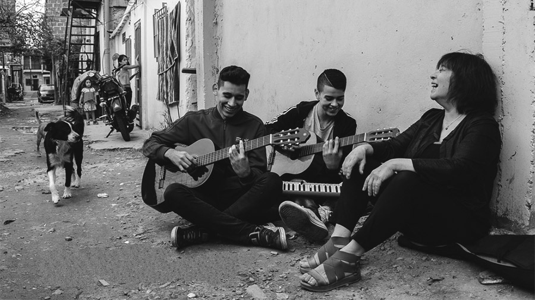

A los 9 años su padre le regaló su primer piano y comenzó su relación con la música. En 1966 se radicó en Rosario para seguir la carrera de Filosofía en la Universidad Nacional de Rosario. En esta etapa participó de los grupos vocales "Contracanto" y "Canto Libre". Fue detenida durante la dictadura cívico-militar autodenominada Proceso de Reorganización Nacional por su vinculación con la militancia peronista.
Una vez finalizada su carrera, se dedicó a la docencia en la misma universidad en la que se formó. Fue directora de la carrera de Filosofía (1990-1994) en la Facultad de Humanidades y Artes de la Universidad Nacional de Rosario. En esos años también se desempeñó como profesora Adjunta en Introducción a la Filosofía y a las Ciencias Sociales en la Facultad de Derecho de la misma casa de estudios.

En Rosario conoció al músico Fito Páez, quien la incentivó a dedicarse por completo a la música. En 1987 lanzó su primer disco "Liliana Herrero", producido por Fito Páez marcando, a su vez, su debut como productor.[5] Su banda soporte estaba formada por Juan Perone (percusión), Claudio Bolzani (guitarra), Iván Tarabelli (teclados) y Roy Elder (vientos).[1] En 1989, Paez produce su segundo disco "Esa Fulanita". Para 1993, la discográfica Epsa Music S.A. produce y publica su tercer álbum "Isla del tesoro", proyecto para el cual contó con invitados como Fito Páez, Ricardo Mollo, Claudia Puyó y Beto Satragni, entre otros.
A partir de allí su carrera musical ha ido en ascenso, obteniendo por su trabajo artístico premios y menciones especiales. Su estilo musical se caracteriza por fusionar composiciones de raíces folclóricas con sonidos y arreglos actuales (como utilizar guitarra eléctrica, etc.), muchos de estos provenientes del rock y el jazz.[6] En 1989 y en referencia al género musical, la artista expresó: «Yo no hago fusión entre el folklore y el rock. Lo que yo hago es el choque entre las culturas. Esas culturas se entienden o se confrontan entre sí, pero no se fusionan» (Humor Registrado, N.º 254, octubre de 1989).[7] En el año 2019 presentó su disco "Canción sobre canción" producido con el sello Elefante en la Habitación! interpretando un repertorio de canciones de Fito Páez.[8